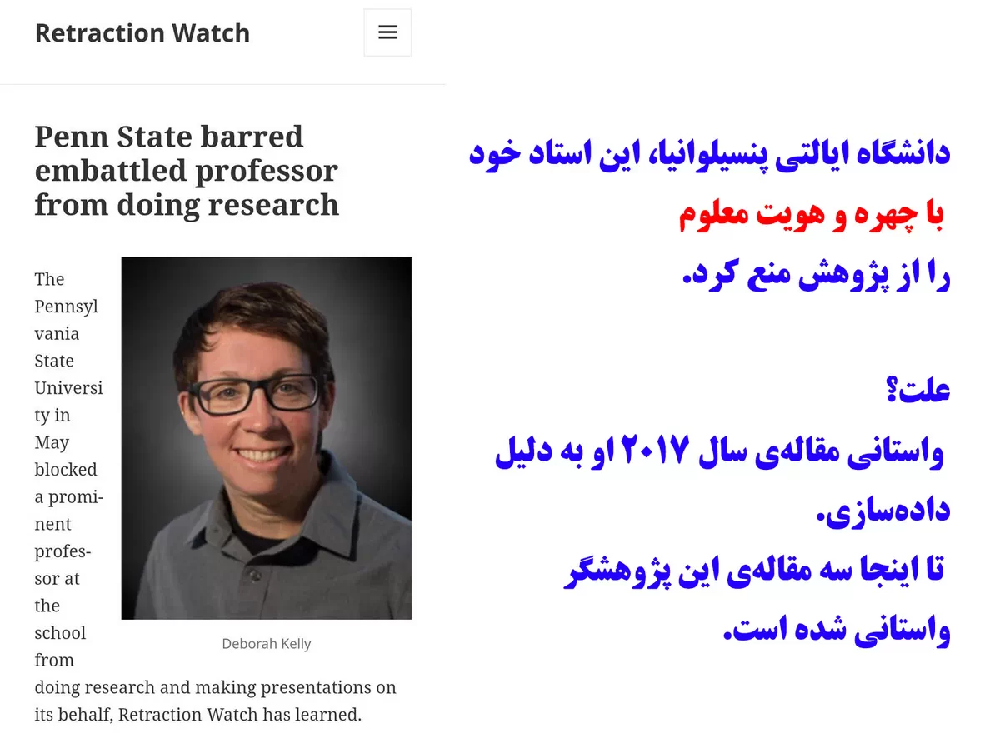
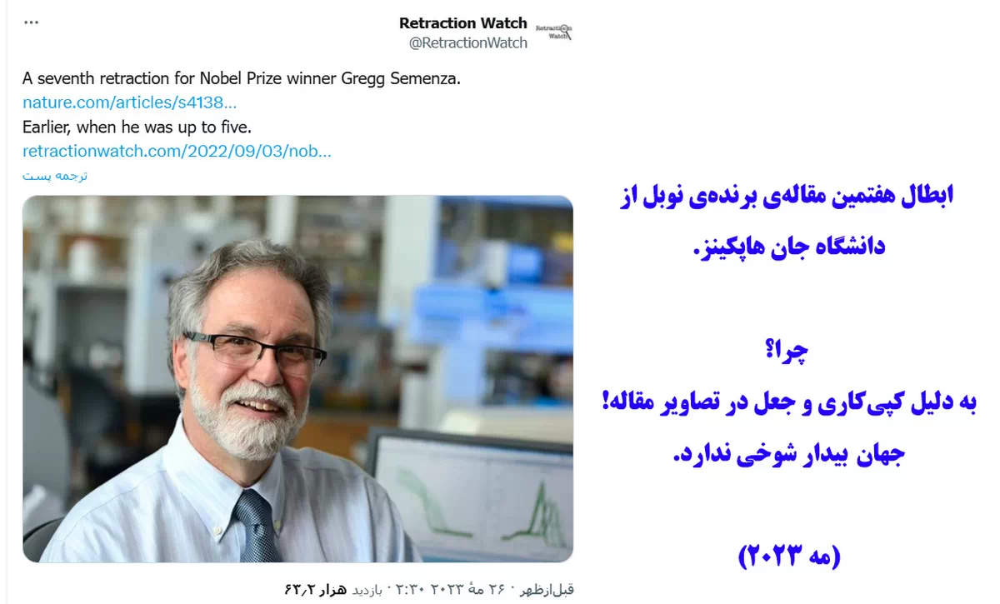
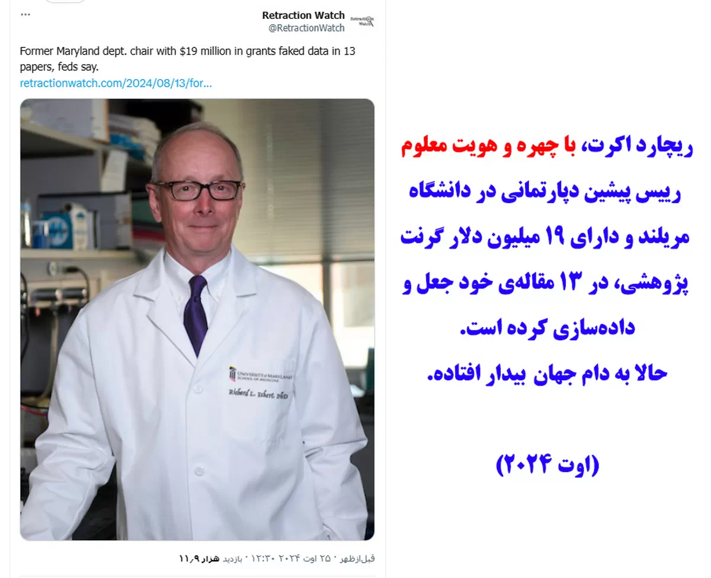
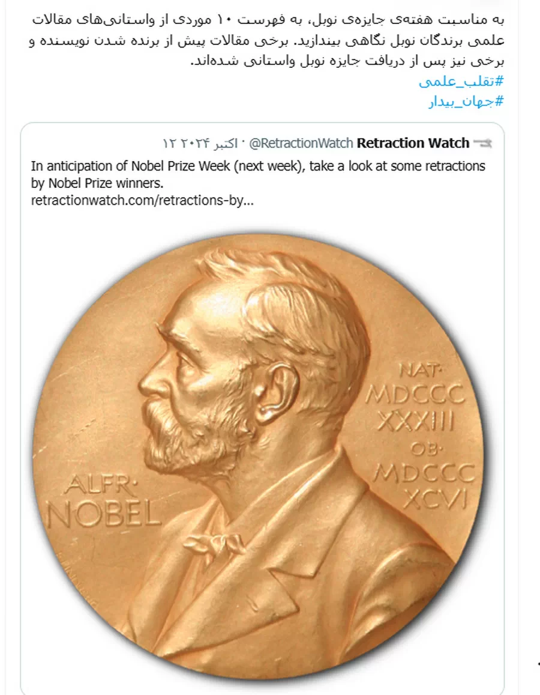
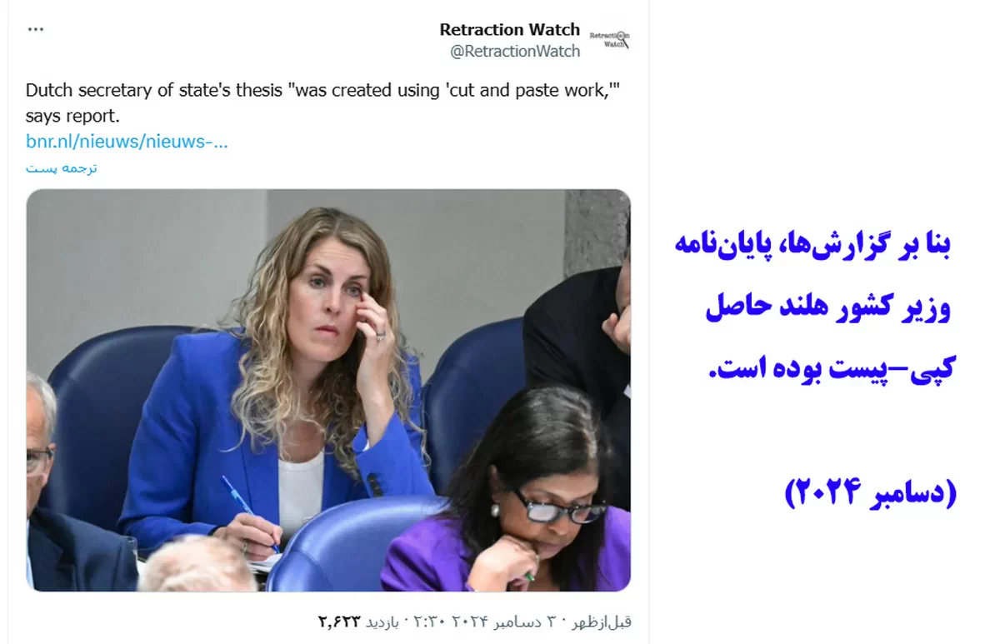

Scientific misconduct is not unique to Iran.
It is a global phenomenon that affects every discipline, every country, and every research system.
What distinguishes scientific communities is not the absence of misconduct, but the way they respond when misconduct is discovered.
Across the world, thousands of papers have been corrected or retracted following concerns raised by researchers, readers, editors, whistleblowers, and independent investigators.
Platforms such as Retraction Watch and PubPeer have expanded the visibility of post-publication review and created new opportunities for scientific self-correction.
The lesson is simple.
Scientific integrity is not protected by denying the existence of misconduct.
It is protected by identifying problems, examining evidence, and correcting the scientific record when necessary.
Correction is not evidence of failure.
The refusal to correct may be.




